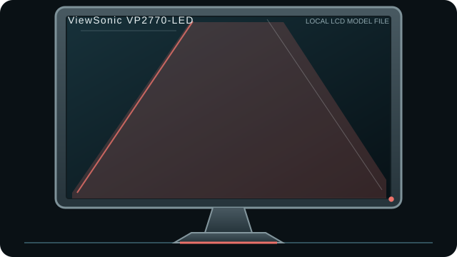

[ INDIVIDUAL COMPONENT // DISPLAYS ]
ViewSonic VP2770-LED
27-inch 1440p professional LCD with extensive legacy-plus-digital connectivity and factory calibration claims.

IDENTIFICATION: Match the complete model and regional suffix on the rear label. This record summarizes published specifications; it is not a substitute for the exact unit manual, cable requirements or physical condition check.
Specifications
| Catalog subcategory | LCD displays |
|---|---|
| Exact product / family | ViewSonic VP2770-LED |
| Panel and native resolution | 27-inch PLS LCD, 2560 × 1440 (16:9) |
| Native timing | 2560 × 1440 at up to 60 Hz |
| Inputs / companion ports | DisplayPort, HDMI, dual-link DVI-D and VGA; USB hub |
| Revision and model distinction | The exact suffix matters for market bundle and service documents. TFTCentral’s review questions some advertised panel/bit-depth claims; do not assume native 10-bit color from marketing language. The review identifies the panel technology as PLS. |
Host compatibility and connection notes
DisplayPort and dual-link DVI-D are the practical paths for full 2560 × 1440 at 60 Hz. HDMI/VGA input modes are limited by the monitor’s accepted timings; verify the manual before using adapters. USB hub data requires its upstream link.
This model’s age means input firmware, calibration state and backlight wear vary by unit. Treat factory calibration as a historical claim, not a current calibration certificate.
Preservation notes
Record the rear-label model, serial/date code, included stand/accessories, tested input, source timing, image condition and calibration state. Keep the matching manual and cable/adaptor chain with the unit; use qualified service procedures for internal work.
Manufacturer documentation and sources
- ViewSonic — VP2770-LED product informationManufacturer product family reference.
- TFTCentral — ViewSonic VP2770-LED reviewIndependent testing including input behavior and qualification of panel/bit-depth claims.